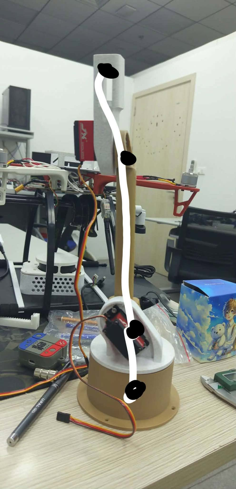
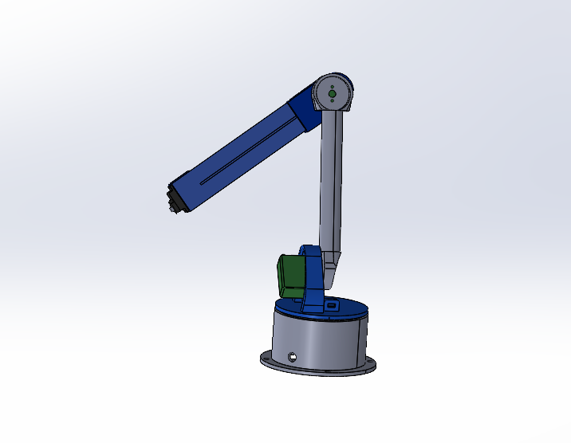
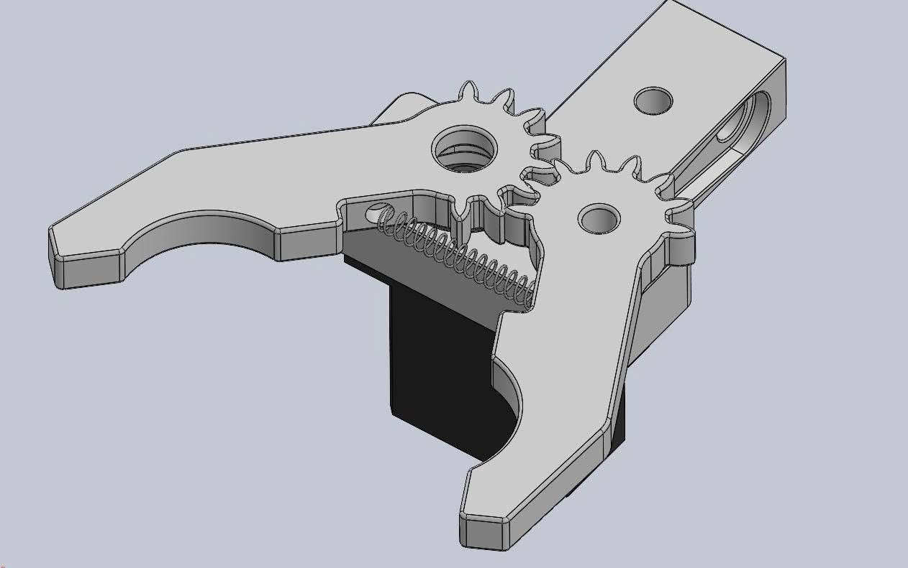
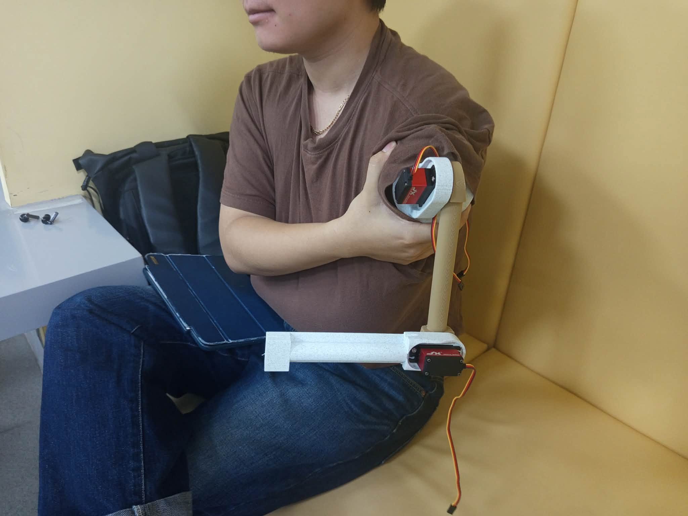
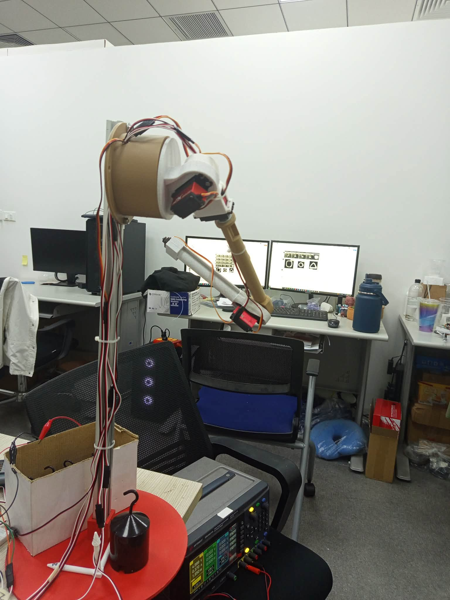
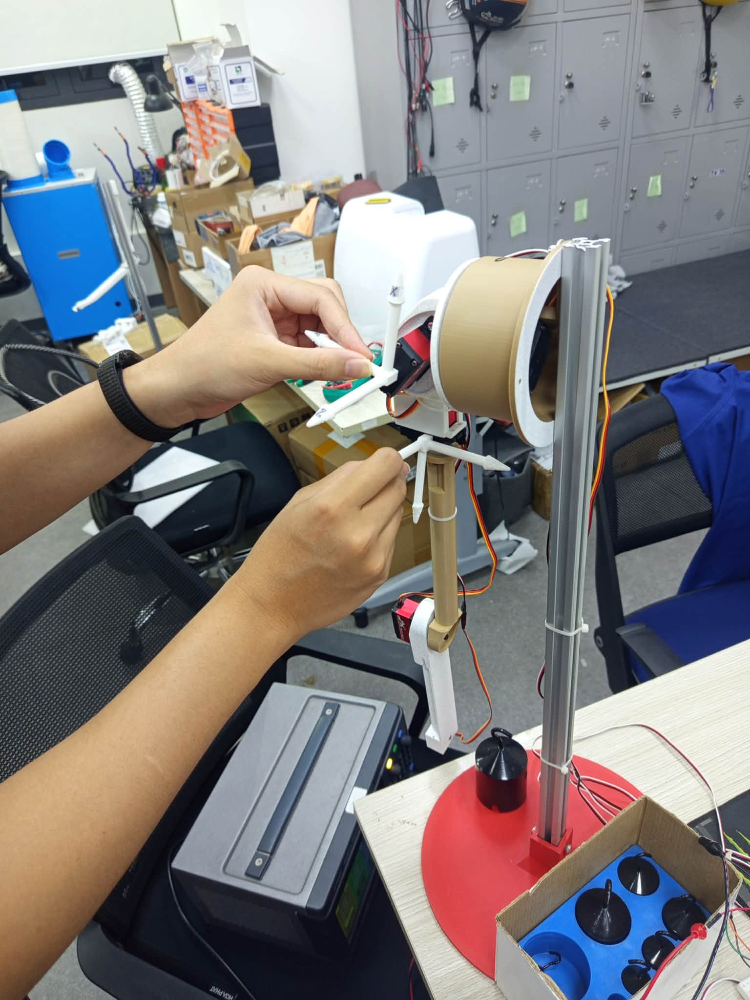

← Back to projects
Automatic Tool-Interchange System for a Humanoid Robotic Arm
A group-led robotics project inspired by CNC tool-changing workflows, combining electromagnetic coupling, mechanical alignment, servo sequencing, and electrical contact integration for autonomous tool exchange.
Project Overview
The system was designed to allow a humanoid robotic arm to automatically pick up, release, and exchange end-effectors at a dedicated tool station. The mechanism uses guided alignment features to position the tool, electromagnetic coupling to secure it, and integrated contact pins to transfer electrical power and signals after attachment.
- Group leader responsible for overall planning and system integration.
- Mechanical design of the tool interface and exchange station.
- Servo-controlled attachment and release sequence.
- Electromagnetic coupling with integrated electrical contacts.
- Prototype fabrication, assembly, testing, and demonstration.

Prototype and Development




